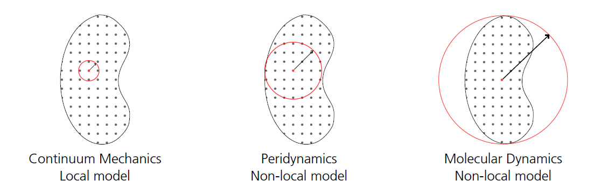

Seminar 1: Trusses and structure of matrices
For a truss everything is a scalar. The norms are given for better illustration.
\[i\]
- point
\[j\]
- neighbor
\[\xi = x_j-x_i\]
\[\eta = u_j - u_i\]
Bond force
\[f_{ij} = c_i\omega_{ij} s\frac{\xi+\eta}{||\xi + \eta||} = c_i\omega_{ij} s\]
\[s = \frac{||\xi + \eta|| - ||\xi||}{||\xi||} = \frac{\eta}{\xi}\]
\[\rho \ddot{u}_i = \frac{1}{2}\sum_j (f_{ji}V_i-f_{ij}V_j)+b_i\]
point based is solved like this
the bond force $f_{ij}$ becomes $\mathbf{f}_{ij}$ and is $\mathbf{f}_{ij}=c_i\omega_{ij} s\frac{\boldsymbol{\xi + \eta}}{||\boldsymbol{\xi + \eta}||}$
Matrix based
\[\begin{bmatrix} K_{11} & \cdots & K_{1j} & 0& ...&0\\ \vdots & \ddots & \\ K_{j1} & & K_{jj} &&&\\ 0 & && \\ \vdots & & &&\ddots\\ 0& & \cdots&&&K_{nn} \end{bmatrix}\begin{bmatrix}u_1\\\vdots\\u_j\\u_{j+1}\\\vdots \\u_n\end{bmatrix} = \mathbf{F}_{internal}\]
\[K_{ij} = -\frac{c}{|\xi_{ij}|} \omega_{ij}V_j \quad \text{for } i \ne j,\quad K_{ii} = -\sum_{j \ne i} K_{ij}; i=1\,...\,n \quad \text{and} \quad j=i+1\,...\,n_{neighbors,i}+1\]
\[\mathbf{F}_{internal}\]
is the force density in $\left[\frac{N}{m^3}\right]$
1D [31] $\rightarrow$ $c = \frac{2E}{A\delta^2}$ 2D For FEM
\[\mathbf{K}=\frac{EA}{L}\begin{bmatrix}1&-1\\-1&1\end{bmatrix}\]
Test the local model case. 
Assumptions
$\delta = L,\, n_{neighbors,i}=1,\, \omega_{ij}=1,\, V_i=V=const.$
\[V=AL\]
Must be $AL$, because the sum of the neighborvolume must represent the whole volume of the neighborhood, which is $AL$.
\[c=0.5\frac{2E}{AL^2}\]
\[K_{11}=-K_{12}=-0.5\frac{c}{\xi} V=-0.5\frac{c}{L} V=-\frac{E}{AL^3}AL=-\frac{E}{L^2}\]
\[\mathbf{K}=\frac{E}{L^2}\begin{bmatrix}1&-1\\-1&1\end{bmatrix}\]
bring it in local form of the stiffness matrix the forces and not the force densities the stiffness has to be multiplied by $V$.
\[^{forces}K_{11}=-^{forces}K_{12}=-\frac{E}{L^2}AL=\frac{EA}{L}\]
\[\mathbf{K}=\frac{EA}{L}\begin{bmatrix}1&-1\\-1&1\end{bmatrix}\]
Analysis of matrix behavior
using LinearAlgebra
E = 1
V = 1
L = 1
np = 4
nn = np-1
delta = 1
omega=ones(np, np)
##
c=zeros(np)
c .= 2*E/delta^2
#c[4]=1.5 .*c[4]
K=zeros(np,np)
for iID in 1:np
for jID in -nn:nn
if jID != 0 && iID + jID > 0 && iID + jID < np + 1
xi = L*abs(jID)
K[iID, iID + jID] -= 0.5 * c[iID] / xi * V * omega[iID, iID + jID]
K[iID, iID] += 0.5 *c[iID] / xi * V * omega[iID, iID + jID]
end
end
end
eigvals(K)
display(K)
rank(K)
eigvals(K)
det(K)
## Damage
omega[1,2] = 0
K=zeros(np,np)
for iID in 1:np
for jID in -nn:nn
if jID != 0 && iID + jID > 0 && iID + jID < np + 1
xi = L*abs(jID)
K[iID, iID + jID] -= 0.5 * c[iID] / xi * V * omega[iID, iID + jID]
K[iID, iID] += 0.5 *c[iID] / xi * V * omega[iID, iID + jID]
end
end
end
display(K)
Perilab
Mesh
header: x y block_id volume
0 0 1 1
1 0 1 1
2 0 1 1
3 0 1 1
4 0 1 1Yaml
PeriLab:
Discretization:
Node Sets:
Node Set 1: 1
Node Set 2: 5
Type: "Text File"
Input Mesh File: "truss.txt"
Models:
Material Models:
Test:
Material Model: "Bond-based Elastic"
Symmetry: "isotropic plane stress"
Young's Modulus: 7000
Poisson's Ratio: 0.3
Blocks:
block_1:
Block ID: 1
Material Model: "Test"
Density: 2e-9
Horizon: 2
Boundary Conditions:
BC_1:
Variable: "Displacements"
Node Set: "Node Set 1"
Coordinate: "x"
Value: "100*t"
Type: Dirichlet
BC_2:
Variable: "Displacements"
Coordinate: "x"
Node Set: "Node Set 2"
Value: "0.1*t"
Type: Dirichlet
Solver:
Material Models: True
Initial Time: 0.0
Final Time: 1.0
Number of Steps: 20
Static:
Show solver iteration: true
Residual tolerance: 1e-7
Solution tolerance: 1e-8
Residual scaling: 7000
m: 550
Maximum number of iterations: 100
Outputs:
Output1:
Output Filename: "truss"
Output File Type: Exodus
Number of Output Steps: 20
Output Variables:
Displacements: True
Number of Neighbors: True
Forces: True